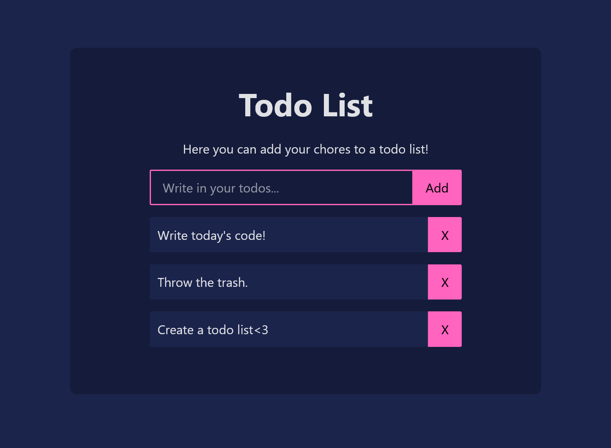

Hello there! My name is
Daniel Faour.
I'm a UX designer and developer.


About me
I have a master's degree in Informatics from the University of Oslo, specializing in UX design and development. My background in computer science and design allows me to create engaging and meaningful experiences through technology. I am seeking new opportunities to grow as a designer and developer.
I have worked on diverse projects, including web and app development, interactive installations, and tangible interfaces. My skills include object-oriented programming, front-end development, and user-centered design. I use tools like Figma and methods such as prototyping, user testing, and workshops to understand user needs. I have experience leading interdisciplinary teams and enjoy solving problems creatively.
Outside of work, I enjoy photography, cooking, working out, gaming, and spending time with friends. I am passionate about design and technology and look forward to contributing positively in the field.
Skills
 UX Design
Universal Design
Ethical Design
Product Design
UX Design
Universal Design
Ethical Design
Product Design
 Web Development
App Development
Programming
Information Security
Web Development
App Development
Programming
Information Security
 Project Management
Leadership
Public Relations
Project Management
Leadership
Public Relations
 Direct Sales
Direct Sales
Check out my work!
Master's Thesis in Informatics - IN5960
(2024)

"The Three Fundamental Qualities for Emotional Influence in Design"
This thesis explores the relationship between design and emotions, focusing on the fundemental qualities that influence emotional responses in design artifacts. Using Research through Design as the primary methodology, supported by Emotional-Driven Design principles, the thesis examines how these qualities contribute in creating emotionally engaging installations. The process involved four phases: data gathering, concept development, installation creation, and analysis. We identified three fundemental qualities through our thesis research: storytelling, sensory engagement, and familiarity. These qualities are crucial in fostering more immersive experiences. Additional elements like exploration, meaningful interactions, contrasts, and robustness can further enhance emotional engagement. The study provides both theoretical validation and practical guidance in design-oriented HCI and RtD methodologies, offering a framework for future research and the creation of emotionally engaging interactive artifacts.
Grade: B
Drikkings.no
(2025)

This is a drinking application that aims to create engaging games for smaller groups without disturbing the conversation. The goal is to make it widely available as a web application, which is why I am using React + Vite. Now featuring 5 games, including "1/16 Minesweeper" and "Shot Roulette", which are shown on the image. The application is designed to be user-friendly and accessible, allowing users to easily navigate and play the games.
Mouse Controller
(2025)
This is a small project I made to control the mouse on my computer using any bluetooth controller. I used pygame to read the controller inputs and pyautogui to control the mouse and some keys. Perfect for presentations or if you want to control your computer from a distance.
Baymax Psychologist AI
(2025)

A Psychologist AI chatbot inspired by Baymax from Big Hero 6.
Created using Angular and Typescript. The chatbot is designed to
provide emotional support and assistance to users. It is
essentially a simple web application using Grok API to generate
responses. The application consists of a chat interface where
users can interact with the chatbot and receive responses. The
conversation is saved in local storage for the next visit, and the
user can clear their conversation if desired.
Note:
This project is for educational purposes only and should not be
used as a substitute for professional mental health services.
Big Data Analysis Case
(2025)
This is a case task I did for a technical interview. It involved analyzing a dataset of 100,000 rows with 10 columns, where I had to find patterns and insights in the data. The task was to analyze and present the data and visualize what I thought was important in a way that is easy to understand for the user. I used Angular and Typescript to create this web application. The application includes a dashboard with various components, such as an interactive table, different kind of charts, and a map, to present the data.
Todo List
(2025)
A simple todo list made with React where you can write in and add todos. Once done, you can delete the todos. Don't worry, the todos are saved in local storage for your next visit!
Threads of Life
(2023)
Promotional poster for a tangible installation from a group project in IN5120 - Tangible Interaction. Here we made an interactive and explorable environment using multiple connected Arduinos, simulating the connection between mushrooms in a real forest.
Glassic Melodies
(2023)

An interactive installation from a group project in IN5120 - Tangible Interaction using Arduino and Ableton to play music through the touch of a wine glass, simulating the sound of resonance of a glass when gliding your finger on the rim. The pacing of the music changes based on how fast you play on it.
JaktApp
(2021)

In this project, our goal was to develop an Android application that helps hunters achieve a successful hunt using APIs from the Norwegian Meteorological Institute and Google Maps. Completed as part of the IN2000 Software Engineering course, the project won an award for the best app of the year. The app features a map that displays the user's current location along with weather forecasts and hazard alerts. Additionally, it includes a function for playing a selection of animal calls, recorded with real hunting instruments, to lure game within shooting range.
Ergon
(2022)
This project addresses the challenges faced by young adults who spend long hours working in front of their computers. It includes developing a smart seat cover, "Ergotrekk," that detects poor posture through built-in pressure sensors. When users slouch or sit incorrectly, the cover gently vibrates to remind them to adjust their posture. With the "Dock", the user is able to control their product according to their needs, such as disabling it for meetings for instance. The Dock also displays the user's posture score at the end of the workday. This solution enables young adults to maintain proper ergonomics effortlessly, ensuring comfort and focus throughout their workday.
Interra
(2020)

This project focuses on empowering young adults aged 20 to 30 to become more environmentally conscious in their daily lives. By providing tailored information and actionable insights related to their everyday chores, the project aims to motivate this age group to adopt more eco-friendly habits. Through a user-centered approach, the project identifies barriers to sustainable behavior and offers practical solutions that are easy to integrate into daily routines. The ultimate goal is to transform environmentally friendly actions from occasional tasks into habitual practices, contributing to a greener planet.
Walleyway Game
(2019)
During high school, in the subject "Information Technology 2", we were tasked with creating a game using only JavaScript, HTML, and CSS. I developed a remake of the classic Walleyway game which first debuted on Gameboy, where you control a paddle to bounce a ball and break bricks. Please note that the game was designed for slower computer hardware, so it may run at a faster pace on modern devices. Maybe you're up for the challenge?